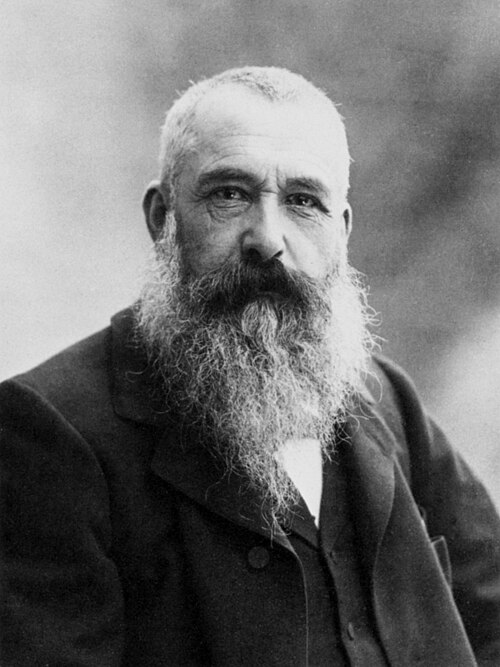
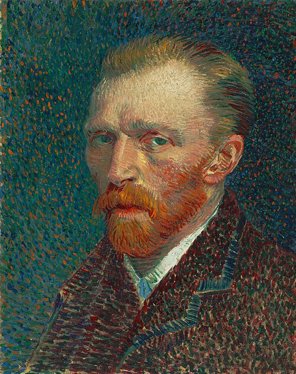
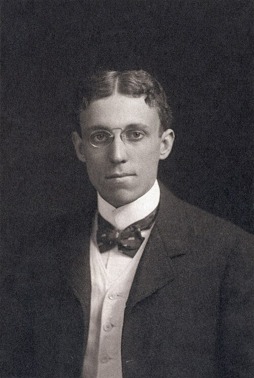

Born Oscar-Claude Monet 14 November 1840 Paris, France Died 5 December 1926 (aged 86) Giverny, France
Born Vincent Willem van Gogh Born 30 March 1853 Zundert, North Brabant, Netherlands Died 29 July 1890 (aged 37) Auvers-sur-Oise, Val-d'Oise, France


Born April 25, 1875 Philadelphia, Pennsylvania United States Died April 27, 1918 (aged 43) Philadelphia, Pennsylvania United States